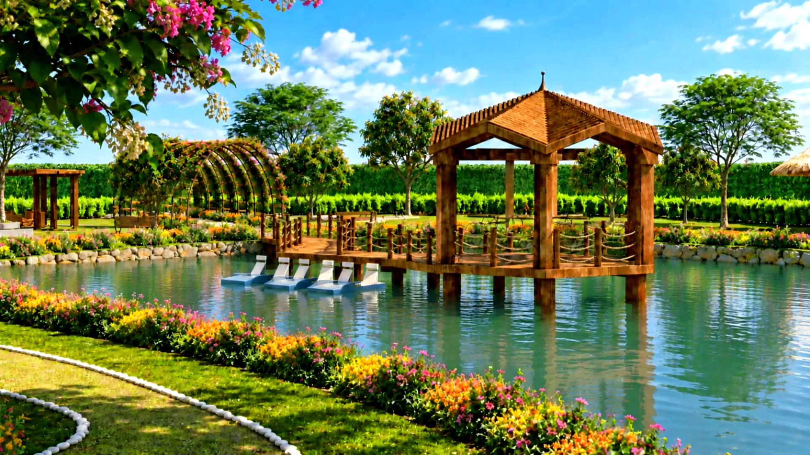
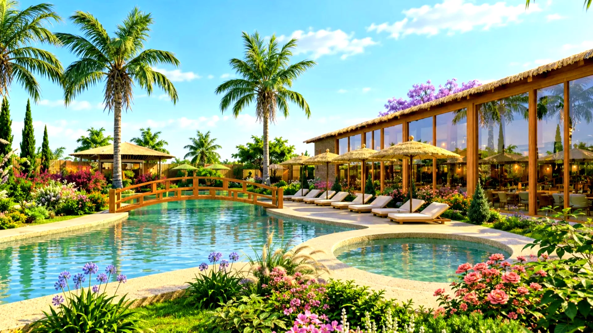
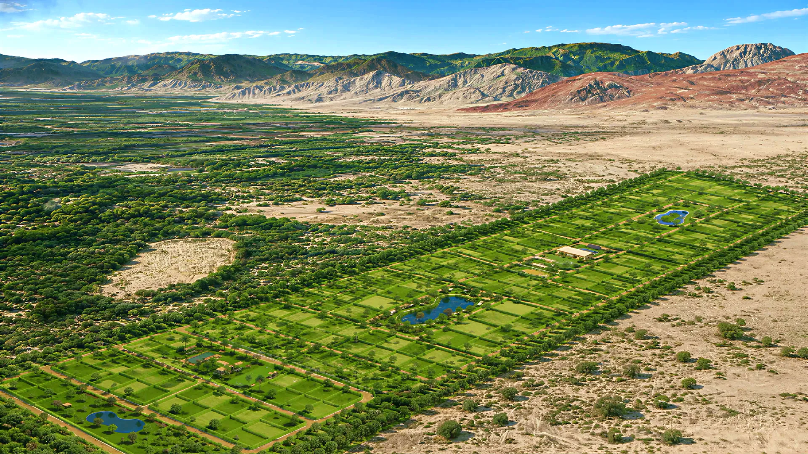

Etapa I
Primera etapa: 116 lotes residenciales articulados alrededor de una laguna artificial como elemento paisajístico central, con espacios de contemplación, recreación y conexión con la naturaleza.
Montelago es un condominio ecoamigable diseñado para brindar una experiencia de vida en contacto con la naturaleza, integrando espacios residenciales, recreativos y de bienestar en un entorno sostenible.
Quiero información
Tres etapas y dos lagunas artificiales. Desliza para recorrerlo de la entrada a la segunda laguna.
Acceso al condominio, junto al Condominio Montehermoso.
Primera etapa: 116 lotes residenciales articulados alrededor de una laguna artificial como elemento paisajístico central, con espacios de contemplación, recreación y conexión con la naturaleza.
Picnic, juegos infantiles, parque canino, gimnasio al aire libre, yoga y fogata. Muelle con botes pedalones y mirador para los atardeceres.
Tercera etapa del proyecto conformada por 115 lotes residenciales, complementada con una zona deportiva y Club House como espacios de encuentro, integración y recreación, fortaleciendo la experiencia residencial mediante ambientes sociales y de bienestar.
Canchas de fútbol y Club House con zona de parrillas, salón de eventos, piscina y espacios de descanso (Etapa III).
Segunda etapa del proyecto conformada por 111 lotes residenciales, integrada alrededor de una segunda laguna artificial que amplía la propuesta paisajística del condominio, incorporando nuevos espacios de descanso, recreación y disfrute del entorno natural.
Segundo espacio paisajístico, con mirador, zonas de descanso, áreas de fogata y espacios de picnic (Etapa II).
Primera etapa: 116 lotes residenciales articulados alrededor de una laguna artificial como elemento paisajístico central, con espacios de contemplación, recreación y conexión con la naturaleza.

Segunda etapa del proyecto conformada por 111 lotes residenciales, integrada alrededor de una segunda laguna artificial que amplía la propuesta paisajística del condominio, incorporando nuevos espacios de descanso, recreación y disfrute del entorno natural.

Tercera etapa del proyecto conformada por 115 lotes residenciales, complementada con una zona deportiva y Club House como espacios de encuentro, integración y recreación, fortaleciendo la experiencia residencial mediante ambientes sociales y de bienestar.

Plano general del proyecto · etapas y zonas recreativas

Recreación y descanso alrededor de la laguna de la Etapa I.

Deporte, eventos y piscina en la Etapa III.

Mirador, fogatas y picnic en la Etapa II.

Arbolado y senderos entre las manzanas.

Vigilancia en el pórtico, agua, electricidad y vías internas.
 Llegada al proyecto
Llegada al proyecto
 Recorrido aéreo sobre las tres etapas
La Etapa I desde arriba
Recorrido aéreo sobre las tres etapas
La Etapa I desde arriba
 La laguna artificial
La laguna artificial
 El proyecto en calma
Etapa II · la zona de la segunda laguna
Etapa III · la zona del Club House
El proyecto en calma
Etapa II · la zona de la segunda laguna
Etapa III · la zona del Club House
No son grabaciones del lugar: son los renders oficiales de Arquitectura, animados. El recorrido completo, con sonido y a pantalla llena, está en el tour.

Cómo llegar · doble acceso por Reque y Pomalca
Déjanos tus datos y te contamos qué lotes quedan, sus medidas y las formas de pago.